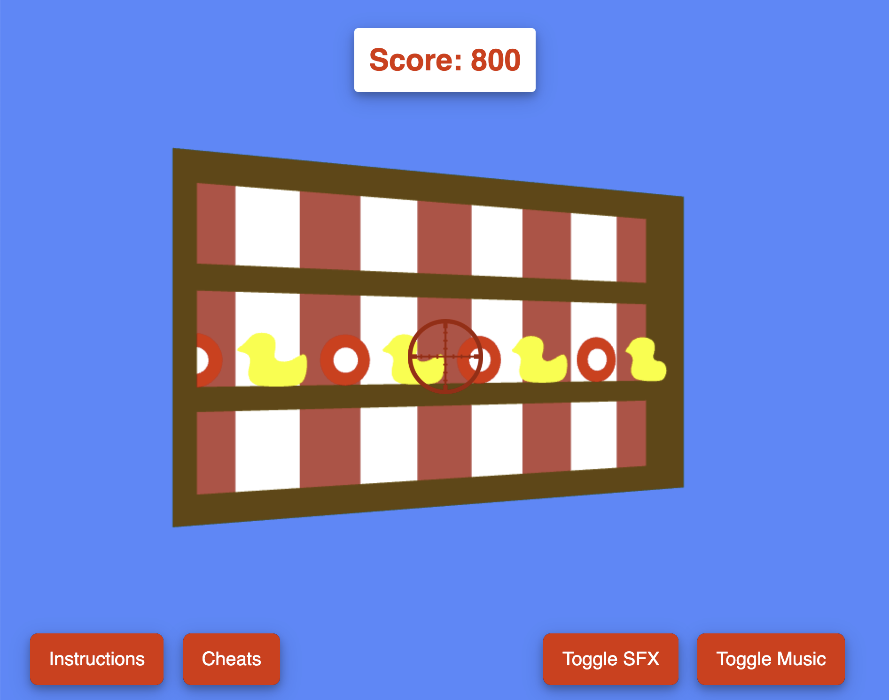
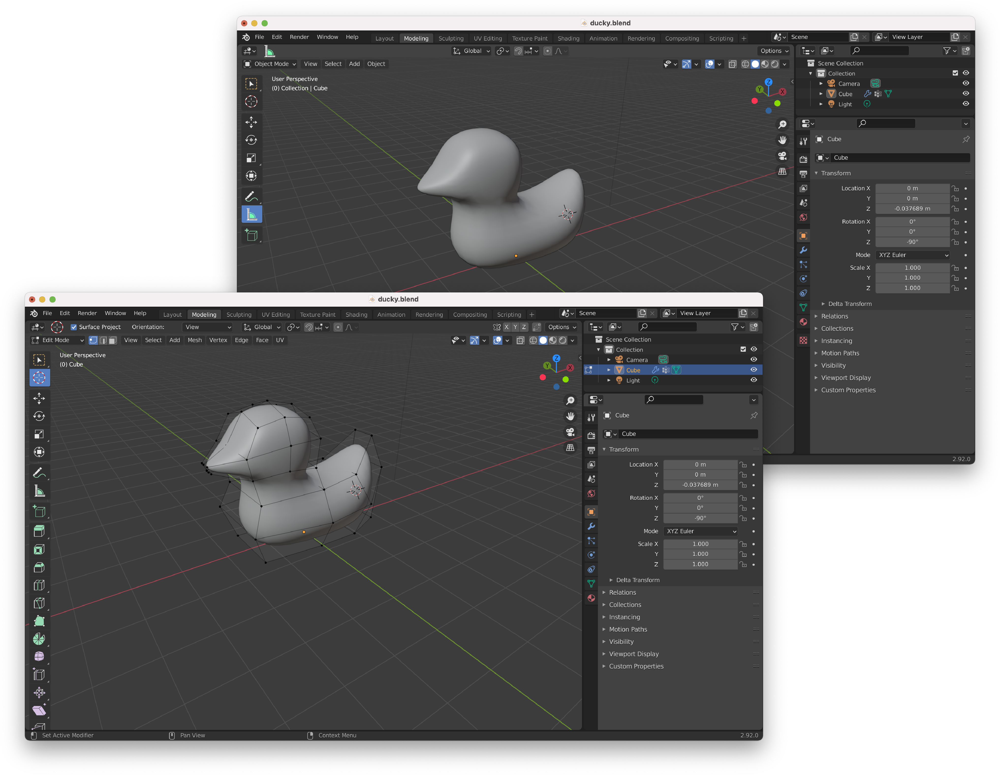
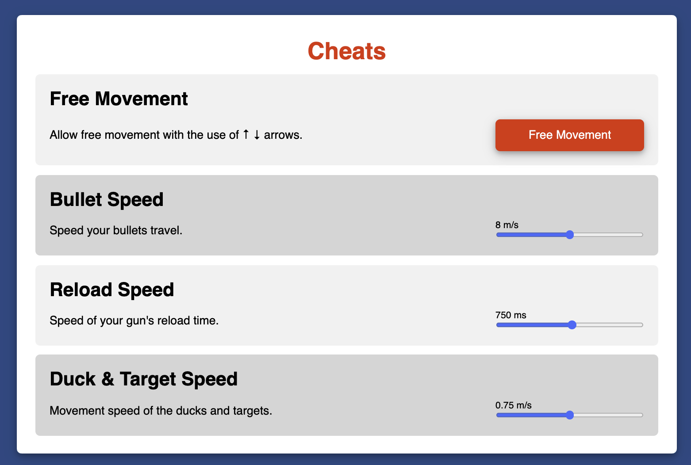

Case Study for Anytown, USA Shooting Gallery
 Play this WebVR ExperienceOVERVIEW
For this course, the main learning objective was to explore ways to deliver a virtual reality experience via a web browser. Prior to this course, I had very minimal experience with VR aside from reading about it via online or on media outlets. I think my expectations of the course included learning about VR through the lens of a designer, learning and honing skills that take me out of my comfort zone. Even though I have had experience with crafting smaller-based games through HTML, CSS, and JavaScript, this course was beyond my usual scope therefore I was initially intimidated. However, I quickly found that the course was already going to be a perfect challenge and level up from my usual experience in design and development.
PROBLEM AND GOAL
The course had a final project that focused on students creating and developing their very own VR experience from scratch, give the learning materials already in place. Personally, for me, this was my first experience with 3D modeling or anything related to VR since as previously mentioned I have only had experienced involvement in flat user interface design. Initially, I had mentioned how intimidated I felt since I was going to be dabbling in a different level of art, which in this case was 3-dimensional. For the course, I had a goal to step outside of my own comfort zone and go beyond the expectations as well as craft a project that incorporated my interests and passions.
PROCESS
Before delving into the process, I want to discuss the background scope of my tools and methods. Prior to this course, I have had experience in JavaScript already therefore I was able to use a JavaScript library called “Three.js” to build my final project, which was a classic Anytown, USA style shooting gallery. Like I had mentioned, I wanted to do something that was still going to allow me to explore my interests and I have always been fond of those types of games therefore I wanted to take on that challenge to create one myself. In the beginning, I had difficulty with figuring out collision detection and proper controls therefore it took me a majority of the first week to learn and hone those set of skills and place them into practice before even moving forward into design and features.
A few other challenges that come to mind through this process have to include the fact that I found it to be a struggle to find any 3D models for rubber ducks or targets which were in my plans, after a few hours of searching for a free 3D model of a rubber duck that had a classic and desirable aesthetic with no luck, I decided to make one myself. I learned how to use a program called “Blender” to sculpt my own rather than spend that time trying to find the ideal character/target for my game. Below is what my model for the duck looked like in the program that was in use during this project.
Figure 1: Blender duck sculpting
Other challenges that come to mind in regard to the development side include having trouble with attempting to make it as code efficient as possible by using loops, arrays, and reusable functions to modularize it.
DELIVERABLES
My final project consisted of building a classic Anytown, USA style shooting gallery. There are a variety of features from the movement in all directions including rotation, cheats page, sounds for every action, background and sound effects, position of the gun, and score systems. I think the most important aspect of this design was having the instructions with graphics in order to keep it immersive and still make the user feel that they have all the instructions necessary to achieve the goal of the game which is to shoot the moving targets. The instructions are not overcomplicated and get straight to the point which is what is essential in games.

Figure 2: Instructions for Game
When you first land on the page, there is an informational welcome page that teaches you the basics of the game which include the layout/setup of the game, introduction of the point system, and how to use the basic controls on the keyboard. Once the user is ready, there is a big red start button for them to click to move forward. Upon arriving on the shooting gallery page, the user will see the target button as well as the moving targets either the duck or the red target. There is a scoreboard on the very top that keeps track of the users’ scores whether that be in the positive or negatives depending on how they do.
On the bottom layout, there are two sides for two buttons on each which consist of the toggle for the gallery music and the soundtrack. The sounds notify the user of what is happening every time they hit the moving targets. On the other side, there is the instructions page which the user first saw when they first arrived on this site, and the cheats page. The cheats system is where they can go if the game level not to their satisfaction whether that be easy or difficult. The user has the ability to change the speed at which the targets move as well.
Figure 3: Cheats Page
OUTCOME & REFLECTION
Looking forward beyond the scope of the project for this assignment, I’d like to dive into WebXR for browsers and making the game possible to be played on a real VR device, as most of the leg work has already been completed during this assignment. What I figured out that was not included in the final, was Oculus controller and pointer tracking, and allowing the game to be viewed in a real VR environment, but I was unable to get user input feedback from the gamepad in the time allotted, which would allow for shooting control which would have been a nice addition.
However, I think the outcome I desired was satisfactory to my initial expectations, however, I understand I can always improve in certain areas. I would like to also note that even with the core focus being on the development and design of the VR game, I still ensured that I followed the visual accessibility standards. For instance, I dedicated a portion of the time to visual feedback in a case where if you hit the duck or target you see a visual movement that the target was hit. This is for cases where users don’t use sound they can still know when they hit the target. By doing so, I can further ensure that potentially all users can enjoy my hard work.
View this WebVR experience in a new tab